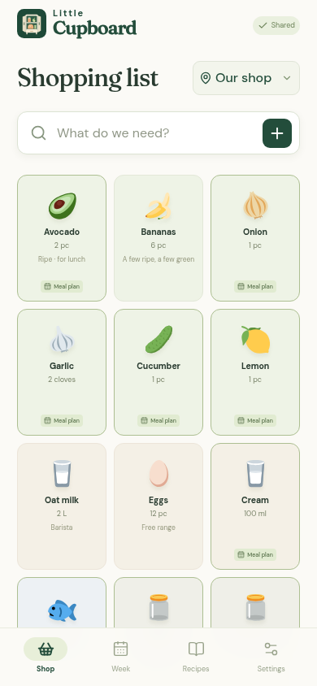
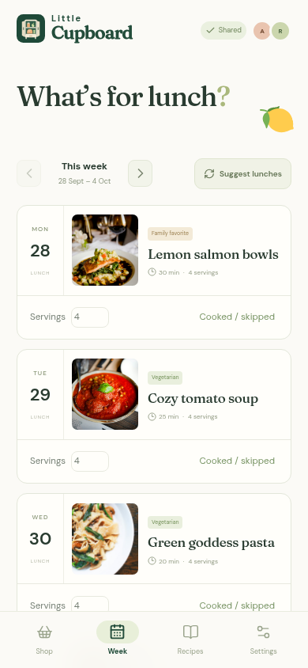
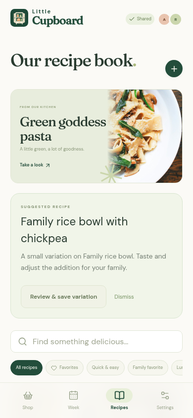

01A happier shopping trip

Big food tiles, one-tap checking, and a list that follows your store.
02A little plan for the week

Plan a lunch and missing ingredients automatically join your shopping list.
03Good food, worth keeping

A family recipe book full of the tried, the loved, and the next thing to try.